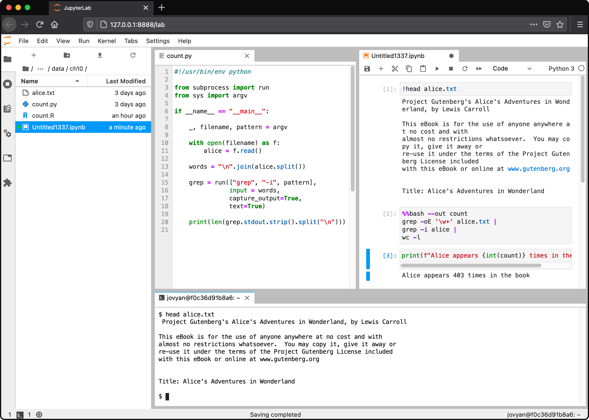
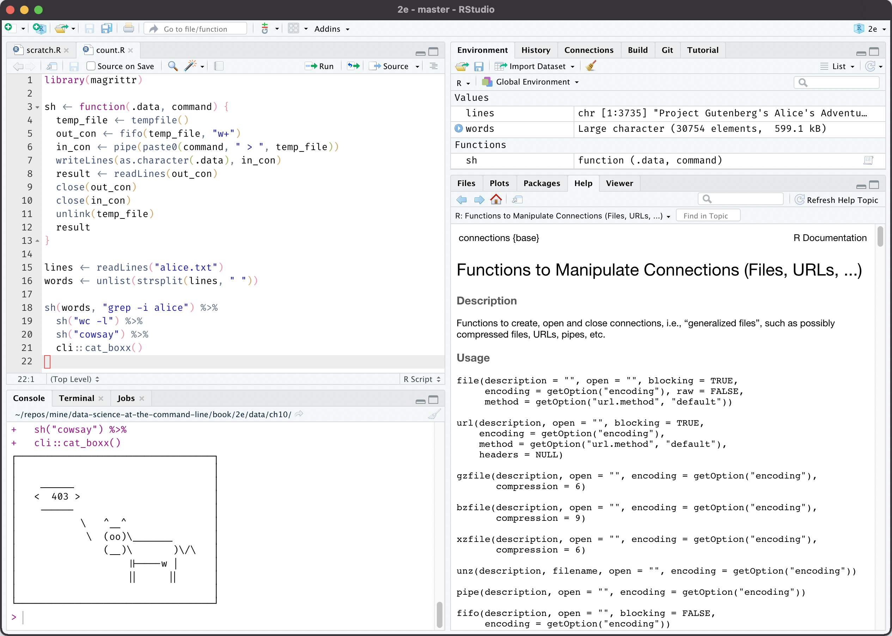
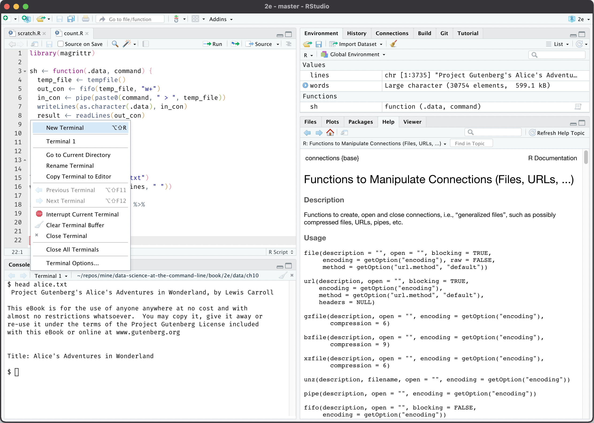

10 Polyglot Data Science
A polyglot is someone who speaks multiple languages. A polyglot data scientist, as I see it, is someone who uses multiple programming languages, tools, and techniques to obtain, scrub, explore, and model data.
The command line stimulates a polyglot approach. The command line doesn’t care in which programming language a tool is written, as long as they adhere to the Unix philosophy. We saw that very clearly in Chapter 4, where we created command-line tools in Bash, Python, and R. Moreover, we executed SQL queries directly on CSV files and executed R expressions from the command line. In short, we have already been doing polyglot data science without fully realizing it!
In this chapter I’m going take this further by flipping it around. I’m going to show you how to leverage the command line from various programming languages and environments. Because let’s be honest, we’re not going to spend our entire data science careers at the command line. As for me, when I’m analyzing some data I often use the RStudio IDE and when I’m implementing something, I often use Python. I use whatever helps me to get the job done.
I find it comforting to know that the command line is often within arm’s reach, without having to switch to a different application. It allows me to quickly run a command without switching to a separate application and break my workflow. Examples are downloading files with curl, inspecting a piece of data with head, creating a backup with git, and compiling a website with make. Generally speaking, tasks that normally require a lot of code or simply cannot be done at all without the command line.
10.1 Overview
In this chapter, you’ll learn how to:
- Run a terminal within JupyterLab and RStudio IDE
- Interact with arbitrary command-line tools in Python and R
- Transform data using shell commands in Apache Spark
This chapter starts with the following files:
cd /data/ch10
l
total 176K
-rw-r--r-- 1 dst dst 1.7K Nov 9 18:46 Untitled1337.ipynb
-rw-r--r-- 1 dst dst 164K Nov 9 18:46 alice.txt
-rw-r--r-- 1 dst dst 460 Nov 9 18:46 count.R
-rwxr-xr-x 1 dst dst 408 Nov 9 18:46 count.py*The instructions to get these files are in Chapter 2. Any other files are either downloaded or generated using command-line tools.
10.2 Jupyter
Project Jupyter is an open-source project, born out of the IPython Project in 2014 as it evolved to support interactive data science and scientific computing across all programming languages. Jupyter supports over 40 programming languages, including Python, R, Julia, and Scala. In this section I’ll focus on Python.
The project includes JupyterLab, Jupyter Notebook, and Jupyter Console. I’ll start with Jupyter Console, as it is the most basic one to work with Python in an interactive way. Here’s a Jupyter Console session illustrating a couple of ways to leverage the command line.
jupyter console
Jupyter console 6.4.0
Python 3.9.4 (default, Apr 4 2021, 19:38:44)
Type 'copyright', 'credits' or 'license' for more information
IPython 7.23.0 -- An enhanced Interactive Python. Type '?' for help.
In [1]: ! date ➊
Sun May 2 01:45:06 PM CEST 2021
In [2]: ! pip install --upgrade requests
Requirement already satisfied: requests in /home/dst/.local/lib/python3.9/site-p
ackages (2.25.1)
Collecting requests
Using cached requests-2.25.1-py2.py3-none-any.whl (61 kB)
Downloading requests-2.25.0-py2.py3-none-any.whl (61 kB)
|████████████████████████████████| 61 kB 2.1 MB/s
Requirement already satisfied: urllib3<1.27,>=1.21.1 in /home/dst/.local/lib/pyt
hon3.9/site-packages (from requests) (1.26.4)
Requirement already satisfied: certifi>=2017.4.17 in /home/dst/.local/lib/python
3.9/site-packages (from requests) (2020.12.5)
Requirement already satisfied: chardet<5,>=3.0.2 in /usr/lib/python3/dist-packag
es (from requests) (4.0.0)
Requirement already satisfied: idna<3,>=2.5 in /home/dst/.local/lib/python3.9/si
te-packages (from requests) (2.10)
In [3]: ! head alice.txt
Project Gutenberg's Alice's Adventures in Wonderland, by Lewis Carroll
This eBook is for the use of anyone anywhere at no cost and with
almost no restrictions whatsoever. You may copy it, give it away or
re-use it under the terms of the Project Gutenberg License included
with this eBook or online at www.gutenberg.org
Title: Alice's Adventures in Wonderland
In [4]: len(open("alice.txt").read().strip().split("\n")) ➋
Out[4]: 3735
In [5]: total_lines = ! < alice.txt wc -l
In [6]: total_lines
Out[6]: ['3735']
In [7]: int(total_lines[0]) ➌
Out[7]: 3735
In [8]: url = "https://www.gutenberg.org/files/11/old/11.txt"
In [9]: import requests ➍
In [10]: with open("alice2.txt", "wb") as f:
...: response = requests.get(url)
...: f.write(response.content)
...:
In [11]: ! curl '{url}' > alice3.txt ➎
% Total % Received % Xferd Average Speed Time Time Time Current
Dload Upload Total Spent Left Speed
100 163k 100 163k 0 0 211k 0 --:--:-- --:--:-- --:--:-- 211k
In [12]: ! ls alice*txt
alice2.txt alice3.txt alice.txt
In [13]: ! rm -v alice{2,3}.txt ➏
zsh:1: no matches found: alice(2, 3).txt
In [14]: ! rm -v alice{{2,3}}.txt
removed 'alice2.txt'
removed 'alice3.txt'
In [15]: lower = ["foo", "bar", "baz"]
In [16]: upper = ! echo '{"\n".join(lower)}' | tr '[a-z]' '[A-Z]' ➐
In [17]: upper
Out[17]: ['FOO', 'BAR', 'BAZ']
In [18]: exit
Shutting down kernel
- You can run arbitrary shell commands and pipelines such as
dateorpipto install a Python package. - Compare this line of Pyton code to count the number of lines in alice.txt with the invocation of
wcbelow it. - Note that standard output is returned as a list of strings, so in order to use the value of total_lines, get the first item and cast it to an integer.
- Compare this cell and the next to download a file with the invocation of
curlbelow it. - You can use Python variables as part of the shell command by using curly braces.
- If you want to use literal curly braces, type them twice.
- Using a Python variable as standard input can be done, but gets quite tricky as you can see.
Jupyter Notebook is, in essence, a browser-based version of Jupyter Console. It supports the same ways to leverage the command line, including the exclamation mark and bash magic. The biggest difference is that a notebook cannot only contain code, but also marked-up text, equations, and data visualizations. It’s very popular among data scientists for this reason. Jupyter Notebook is a separate project and environment, but I’d like to use JupyterLab to work with notebooks, because it offers a more complete IDE.
Figure Figure 10.1 is a screenshot of JupyterLab, showing the file explorer (left), a code editor (middle), a notebook (right), and a terminal (bottom). The latter three all show ways to leverage the command line. The code is something I get back to in the next section. This particular notebook is quite similar to the console session I just discussed. The terminal offers a complete shell for you to run command line tools. Be aware that there’s no interactivity possible between this terminal, the code, and the notebook. So this terminal is not really different from having a separate terminal application open, but it’s still helpful when you’re working inside a Docker container or on a remote server.

This notebook in the screenshot also contains a cell using so-called %%bash magic, which allows you to write multi-line Bash scripts. Because it’s much more difficult to use Python variables, I don’t recommend this approach. You’re better off creating a Bash script in a separate file, and then executing it by using the exclamation mark (!).
10.3 Python
The subprocess module allows you to run command-line tools from Python and connect to their standard input and output. This module is recommended over the older os.system() function. It’s not run in a shell by default, but it’s possible to change that with the shell argument to run() function.
bat count.py
───────┬────────────────────────────────────────────────────────────────────────
│ File: count.py
───────┼────────────────────────────────────────────────────────────────────────
1 │ #!/usr/bin/env python
2 │
3 │ from subprocess import run ➊
4 │ from sys import argv
5 │
6 │ if __name__ == "__main__":
7 │
8 │ _, filename, pattern = argv
9 │
10 │ with open(filename) as f: ➋
11 │ alice = f.read()
12 │
13 │ words = "\n".join(alice.split()) ➌
14 │
15 │ grep = run(["grep", "-i", pattern], ➍
16 │ input = words,
17 │ capture_output=True,
18 │ text=True)
19 │
20 │ print(len(grep.stdout.strip().split("\n"))) ➎
───────┴────────────────────────────────────────────────────────────────────────- The recommended way to leverage the command line is to use the
run()function of thesubprocessmodule. - Open the file filename
- Split the entire text into words
- Run the command-line tool
grep, where words is passed as standard input. - The standard output is available as one long string. Here, I split it on each newline character to count the number of occurrences of pattern.
This command-line tools is used as follows:
./count.py alice.txt alice
403Notice that the first argument of the run call on line 15 is a list of strings, where the first item is the name of the command-line tool, and the remaining items are arguments. This is different from passing a single string. This is also means that you don’t have any other shell syntax available that would allow for things such as redirection and piping.
10.4 R
In R, there are several ways to leverage the command line.
In the example below, I start an R session and count the number of occurrences of the string alice in the book Alice’s Adventures in Wonderland using the system2() function.
R --quiet
lines <- readLines("alice.txt") ➊
head(lines)
[1] "Project Gutenberg's Alice's Adventures in Wonderland, by Lewis Carroll"
[2] ""
[3] "This eBook is for the use of anyone anywhere at no cost and with"
[4] "almost no restrictions whatsoever. You may copy it, give it away or"
[5] "re-use it under the terms of the Project Gutenberg License included"
[6] "with this eBook or online at www.gutenberg.org"
words <- unlist(strsplit(lines, " ")) ➋
head(words)
[1] "Project" "Gutenberg's" "Alice's" "Adventures" "in"
[6] "Wonderland,"
alice <- system2("grep", c("-i", "alice"), input = words, stdout = TRUE) ➌
head(alice)
[1] "Alice's" "Alice's" "ALICE'S" "ALICE'S" "Alice" "Alice"
length(alice) ➍
[1] 403- Read in the file alice.txt
- Split the text into words
- Invoke the command-line tool
grepto only keep the lines that match the string alice. The character vector words is passed as standard input. - Count the number of elements in the character vector alice
A disadvantage of system2() is that it first writes the character vector to a file before passing it as standard input to the command-line tool. This can be problematic when dealing with a lot of data and a lot of invocations.
It’s better to use a named pipe, because then no data will be written to disk, which is much more efficient. This can be done with pipe() and fifo() functions. Thanks to Jim Hester for suggesting this. The code below demonstrates this:
out_con <- fifo("out", "w+") ➊
in_con <- pipe("grep b > out") ➋
writeLines(c("foo", "bar"), in_con) ➌
readLines(out_con) ➍
[1] "bar"
close(out_con); close(in_con); unlink("out") ➎- The function
fifo()creates a special first-in-first-out file called out. This is just a reference to a pipe connection (like stdin and stdout are). No data is actually written to disk. - The tool
grepwill only keep lines that contain a b and write them the named pipe out . - Write two values to standard input of the shell command.
- Read the standard output produces by
grepas a character vector. - Clean up the connections and delete the special file.
Because this requires quite a bit of boilerplate code (creating connections, writing, reading, cleaning up), I have written a helper function sh(). Using the pipe operator (%>%) from the magrittr package I chain together multiple shell commands.
library(magrittr)
sh <- function(.data, command) {
+ temp_file <- tempfile()
+ out_con <- fifo(temp_file, "w+")
+ in_con <- pipe(paste0(command, " > ", temp_file))
+ writeLines(as.character(.data), in_con)
+ result <- readLines(out_con)
+ close(out_con)
+ close(in_con)
+ unlink(temp_file)
+ result
+ }
lines <- readLines("alice.txt")
words <- unlist(strsplit(lines, " "))
sh(words, "grep -i alice") %>%
+ sh("wc -l") %>%
+ sh("cowsay") %>%
+ cli::cat_boxx()
┌──────────────────────────────────┐
│ │
│ _____ │
│ < 403 > │
│ ----- │
│ \ ^__^ │
│ \ (oo)\_______ │
│ (__)\ )\/\ │
│ ||----w | │
│ || || │
│ │
└──────────────────────────────────┘
q("no")10.5 RStudio
The RStudio IDE is arguably the most popular environment for working with R. When you open RStudio, you will first see the console tab:

The terminal tab is right next to the console tab. If offers a complete shell:

Note that, just as with JupyterLab, this terminal is not connected to the console or any R scripts.
10.6 Apache Spark
Apache Spark is a cluster-computing framework. It’s the 800-pound gorilla you turn to when it’s impossible to fit your data in memory. Spark itself is written in Scala, but you can also interact with it from Python using PySpark and from R using SparkR or sparklyr.
Data processing and machine learning pipelines are defined through a series of transformations and one final action. One such transformation is the pipe() transformation, which allows you to run the entire dataset through a shell command such as a Bash or Perl script. The items in the dataset are written to standard input and the standard output is returned as an RDD of strings.
In the session below, I start a Spark shell and again count the number of occurrences of alice in the book Alice’s Adventures in Wonderland.
spark-shell --master local[6]
Spark context Web UI available at http://3d1bec8f2543:4040
Spark context available as 'sc' (master = local[6], app id = local-16193763).
Spark session available as 'spark'.
Welcome to
____ __
/ __/__ ___ _____/ /__
_\ \/ _ \/ _ `/ __/ '_/
/___/ .__/\_,_/_/ /_/\_\ version 3.1.1
/_/
Using Scala version 2.12.10 (OpenJDK 64-Bit Server VM, Java 11.0.10)
Type in expressions to have them evaluated.
Type :help for more information.
scala> val lines = sc.textFile("alice.txt") ➊
lines: org.apache.spark.rdd.RDD[String] = alice.txt MapPartitionsRDD[1] at textF
ile at <console>:24
scala> lines.first()
res0: String = Project Gutenberg's Alice's Adventures in Wonderland, by Lewis Ca
rroll
scala> val words = lines.flatMap(line => line.split(" ")) ➋
words: org.apache.spark.rdd.RDD[String] = MapPartitionsRDD[2] at flatMap at <con
sole>:25
scala> words.take(5)
res1: Array[String] = Array(Project, Gutenberg's, Alice's, Adventures, in)
scala> val alice = words.pipe("grep -i alice") ➌
alice: org.apache.spark.rdd.RDD[String] = PipedRDD[3] at pipe at <console>:25
scala> alice.take(5)
res2: Array[String] = Array(Alice's, Alice's, ALICE'S, ALICE'S, Alice)
scala> val counts = alice.pipe("wc -l") ➍
counts: org.apache.spark.rdd.RDD[String] = PipedRDD[4] at pipe at <console>:25
scala> counts.collect()
res3: Array[String] = Array(64, 72, 94, 93, 67, 13) ➎
scala> counts.map(x => x.toInt).reduce(_ + _) ➏
res4: Int = 403
scala> sc.textFile("alice.txt").flatMap(line => line.split(" ")).pipe("grep -i a
lice").pipe("wc -l").map(x => x.toInt).reduce(_ + _)
res5: Int = 403 ➐- Read alice.txt such that each line is an element.
- Split each element on spaces. In other words, each line is split into words.
- Pipe each partition through
grepto keep only the elements that match the string alice. - Pipe each partition through
wcto count the number of elements. - There’s one count for each partition.
- Sum all counts to get a final count. Note that elements first need to be converted from strings to integers.
- The above steps combined into a single command.
The pipe() transformation is also available in PySpark, SparkR, and sparklyr.
If you want to use a custom command-line tool in your pipeline, then you need to make sure that it’s present on all nodes in the cluster (known as the executors). One way to do this is to specify the filename(s) with the --files option when you’re submitting Spark applications using spark-submit.
Matei Zaharia and Bill Chambers (the original author of Apache Spark) mention in their book Spark: The Definitive Guide that “[t]he pipe method is probably one of Spark’s more interesting methods.” That’s quite the compliment! I think it’s fantastic that the developers of Apache Spark added the ability to leverage a 50-year old technology.
10.7 Summary
In this chapter you learned several ways to leverage the command line in other situations, including programming languages and other environments. It’s important to realize that the command line doesn’t exist in a vacuum. What matters most is that you use tools, sometimes in combination, that reliably get the job done.
Now that we’ve had all the four OSEMN chapters and the four intermezzo chapters, it’s time to wrap this up and conclude in the final chapter.
10.8 For Further Exploration
- There are also ways to integrating two programming languages directly, without the use of the command line. For example the
reticulatepackage in R allows you to interface with Python directly.